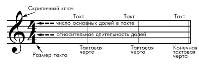
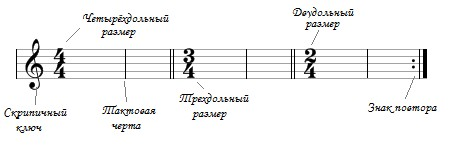

Урок 6. Метр. Такт. Тактовая черта.
Теория
Метр — это чередование сильных и слабых долей в музыке, создающее ощущение регулярного пульса.
- Такт — это отрезок музыкального произведения, ограниченный тактовыми чертами. В каждом такте содержится определённое количество долей.
- Тактовая черта — это вертикальная линия на нотном стане, которая отделяет один такт от другого.
Метр и такт помогают музыкантам ориентироваться во времени и правильно исполнять ритм.
В начале произведения указывается размер (например, 2/4, 3/4, 4/4), который показывает, сколько долей в каждом такте и какой длительностью они обозначаются.
Тактовые черты делают запись музыки более понятной и удобной для чтения.
Упражнения
- Распознавание метра: Определите, сколько долей в каждом такте (2/4 — два удара в такте; 3/4 — три удара в такте; 4/4 — четыре удара в такте).
- Ритмическое упражнение: Простучите или пропойте ритм, отмечая тактовые черты (Сильная, Слабая, Слабая, Сильная, Слабая, Слабая).
Аудио-примеры
Пример размера 2/4:
Пример размера 3/4:
Визуальные примеры
Такт и тактовая черта на нотном стане:

Обозначение размера в начале произведения:
